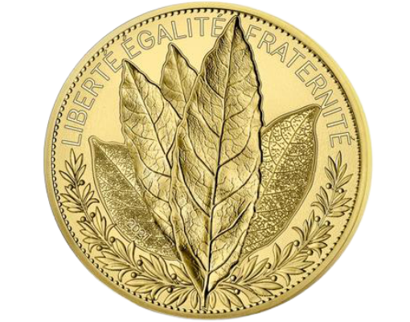

-
deux dollars pour souligner le 75e
La nouvelle pièce est ornée d’une photo connue du photographe Claude Dettloff, intitulée «Attends-moi papa», prise le 1er octobre 1940.
-

10 pfennig - Festungs-Feuerwehr - Thionville
Au début de la guerre les pompiers de Thionville furent militarisés. Ils constituèrent les "Pompiers de la place forte de Thionville.
-

5 Centimes - Dépôt de prisonniers de Sédières
Camp de prisonniers pour officiers allemands installé dans un orphelinat situé près du château de Sédières sur la commune de Clergoux (19).
-
Luxembourg 2018 - Pièce 2 Euro Décè de Guillaume I.
les meilleurs conditions vos pièces de 2 Euro commémorative La maison du Collectionneur vous propose la mallette pour 144 pièces .
-
Allemagne - 2 Euro commémorative 2018 - Berlin
2 euro commémoratives les classeurs pièces Lindner ou la mallette pour 144 pièces 2 Euro de Safe.
-
Allemagne - 2 Euro commémorative 2018 Helmut Schmidt
La maison du Collectionneur vous propose pour ranger vos 2 euro commémoratives les classeurs pièces Lindner ou la mallette pour 144 pièces 2 Euro.
-

Italie 2018 - 2 euro Ministère de la Santé
2 Euro commémorative La maison du Collectionneur vous propose la mallette pour 144 pièces 2 Euro.
-

Malte 2018 - Pièce 2 Euro commémorative Patrimoine culturel
2 Euro commémorative La maison du Collectionneur vous propose la mallette pour 144 pièces 2 Euro.
-
La pièce espagnole commémorative de 2 euros
À l’occasion des dix ans de l’euro, Cependant 70 à 100 000 ont eu une malformation: les étoiles étaient trop grandes.
-

Single-origin coffee whatever
Williamsburg tofu polaroid, 90's Bushwick irony locavore ethnic meh messenger bag Truffaut jean shorts.
-

20 Centimes 1974 de France
1855 Pièce de monnaie - Napoléon III Empereur, Empire Francais, Dix Centimes, B, France, Pièce de collection, Distribué.
-

1855 Pièce de monnaie - Napoléon III Empereur
Williamsburg tofu polaroid, 90's Bushwick irony locavore ethnic meh messenger bag Truffaut jean shorts.